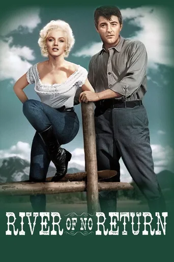

Река не течет вспять 1954
Мэтт Колдер, возвратившись из тюрьмы, где он отсидел за убийство одного негодяя, находит своего шестилетнего сына Марка в лагере американских переселенцев «дикого запада», где его приютила певица местного кабаре Кей. Мэтт забирает сына в свой новый дом у излучины горной реки, и решает начать новую жизнь среди бескрайних просторов северной Америки. В это время Гарри, нечистый на руку дружок Кей, выигрывает в карты золотоносный участок в Консел Сити и предлагает девушке бросить все и умчаться с ним на плоту по реке, чтобы как можно быстрее застолбить золотую жилу, которую он получил обманом. Бурные воды горной реки вынуждают парочку сделать остановку рядом с хижиной Мэтта и сына. Гарри, узнав от фермера, что река небезопасна своими бурными порогами и водопадами, решает украсть лошадь и ружье у Мэтта. Кей принимает решение остаться с фермером и ждать, когда вернется Гарри. Не прошло и дня, как на оставшихся в доме у реки нападает племя индейцев и сжигает их дом. Мэтт с сыном и Кей успевают уплыть от разъяренных апачей на плоту. Им предстоит нелегкий путь вниз по реке, через пороги и непроходимые леса, кишащие дикими животными, а на их след уже вышли кровожадные индейцы...
Открыть в каталогеДанные и постеры принадлежат их правообладателям. Этот продукт использует TMDB API, но не одобрен и не сертифицирован TMDB.